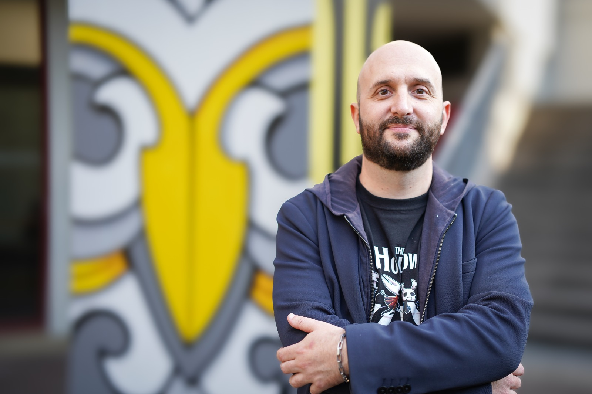

Raphaël Marczak
Lecturer at Te Kura Toi | School of Arts (University of Waikato) Media and Creative Technologies Department, Te Wānanga o Ngā Kete | Division of Arts, Law, Psychology and Social Sciences
Raphaël's research and creative practice focuses on designing audiovisual immersive media (VR | XR) through novel interaction paradigms. In an era increasingly dominated by AI, his current projects aim to recenter the human body, exploring innovative mechanics such as breath-controlled interactions within virtual spaces.
At the University of Waikato, he is recognized for his teaching in Interactive Media Design, Game Design, and Digital Arts & Cultures. He challenges his students to craft (im)possible spaces and to critically examine how digital media can reconnect with tangible realities (bridging virtuality with physical experiences through visual books, ink-based interactions, and escape games).